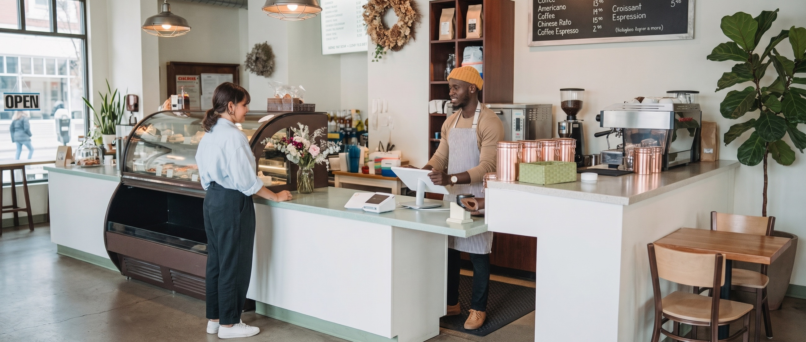

The clients who already know you
 Fahad IshtiaqFounder, Vela
Fahad IshtiaqFounder, VelaA client leaves happy. You finish the work, send the invoice and move on to the next job.
Months later, you wonder how they are getting on. Was another service due? Did they ever act on that recommendation? You meant to check, but the week filled up.
A useful follow-up starts there: a reason to write that makes sense to the person receiving it.
Three notes worth sending
A thank-you after the work. Short and personal. Confirm anything they need to know, explain the next step and leave room for a question. It should sound like you remember the work you did together.
A check-in when another visit makes sense. A service every few months. A review once a year. A follow-up after a project. Use the timing you agreed or the history in your records, then ask whether they need help. Give the message an occasion beyond a spare slot on a mailing calendar.
A seasonal note with something useful. A reminder before a busy period, a tip that saves them a problem, or a service change relevant to their earlier work. Offer an easy way to reply or book.
Choose the notes that fit the relationship. Respect each client’s contact preferences and stop when they ask. A useful reminder should feel welcome.
Where artificial intelligence helps
The plan is simple. Keeping it running takes attention.
Your client records and scheduling tools can track agreed dates and queue reminders. AI can help draft the messages in your voice and organise the replies. Together, they give you a practical way to keep track of who is due a check-in and who needs an answer.
Start by reviewing drafts against the client records they use. Set the sending rules, check the results and pause reminders when someone replies, books or asks to stop. Keep complaints and questions about earlier work with a person who can help.
The aim is to spend your time on the conversation, with less effort remembering when to start it.
Look at who came back into the conversation
A plain monthly summary can show which check-ins went out, who replied, who booked and who needs your attention. Read the replies too. A request to stop tells you something different from a request for another appointment.
Look for useful conversations and the effort it takes to maintain them. Someone booking after a reminder is worth recording; understanding what prompted them may take a question.
You already share a history with these clients. A thoughtful note gives you a way to pick up the conversation: “How did that work out? Is there anything you need?”